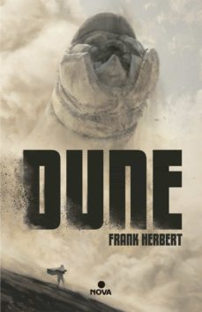

Libros de Ciencia Ficción
El problema de los tres cuerpos
El problema de los tres cuerpos es una novela de ciencia ficción del escritor chino Liu Cixin. Es el primer libro de la trilogía titulada El recuerdo del pasado de la Tierra, pero los lectores chinos generalmente se refieren a la serie por el título de la primera novela. El título hace referencia al problema de los tres cuerpos en el campo de la mecánica orbital.
La máquina del tiempo
La máquina del tiempo (The Time Machine) es una novela de ciencia ficción del escritor británico Herbert George Wells, publicada por primera vez en Londres en el año 1895 por William Heinemann. Consta de dieciséis capítulos y un epílogo.Al contrario que Julio Verne, padre del detalle y la explicación minuciosa, Wells describe (a propósito) la máquina de modo superficial y a la ligera, con algunas pinceladas de color, que dejan al lector con curiosidad por saber más del invento y su mecanismo.

Dune
Dune es una novela de ciencia ficción escrita por Frank Herbert en 1965. Su éxito fue rotundo; en 1966 ganó el Premio Hugo y en 1965 la primera edición del Premio Nébula a la mejor novela de ciencia ficción. Publicado en español por la editorial Acervo en 1975, Dune abre una de las sagas más importantes de la literatura fantástica y de ciencia ficción. En 2007 se registraron unas ventas de más 12 millones de ejemplares, convirtiéndola en la novela de ciencia ficción más vendida a la fecha.1